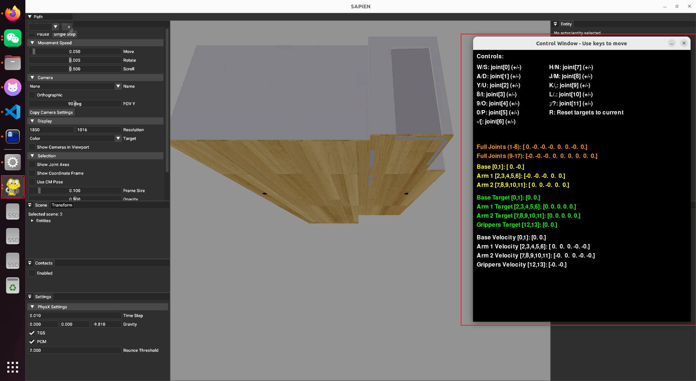

技术文档合集版¶
一、项目 Github 仓库 & B 站平台视频¶
XLeRobot 仓库：Vector-Wangel/XLeRobot: XLeRobot: Practical Dual-Arm Mobile Home Robot for $660
LeRobot 仓库：huggingface/lerobot: 🤗 LeRobot: Making AI for Robotics more accessible with end-to-end learning
LeRobot HuggingFace：lerobot (LeRobot)
LeRobot 中文社区：首页 | WowRobo Wiki - LeRobot 中文社区
B 站视频：【XLeRobot 家务展示 4 千成本（近期开卖）】
B 站视频：【新版 Lerobot SO101 机械臂教程一站通：5. 机械臂校准及遥操作】
B 站视频对应讲义 ↑：小小工程师

远程(两主两从)控制私人仓库：so101 双臂远程遥操和 lekiwi 底盘的单独控制 ↑ 视频链接：【【Xlerobot 复刻】家具与机器人无限的可能性】
[!NOTE] 注意 以下连接仅为个人短时间内收集到的，不一定是最全最好的教程，各位可以根据项目中的需要进行查缺补漏，自行寻找更好的视频&博客资源。
二、Python 语法¶
dataclass 修饰器作用:Python 中更加高效定义对象——dataclass 装饰器 - 知乎
三、3D 建模：¶
【给屏幕做外壳！通过 SOLIDWORKS 实现外壳自由！ 电路板外壳设计！软件工程师必备！】 【【SolidWorks 三天速成教程】2025 最新最全快速精通教程，全程干货无废话，吊打几十小时教学！少走 99%的弯路。】
四、树莓派 & Linux 系统¶
4.1 必备 Linux 技能：¶
- 基本命令行操作(cd、pwd、mv、cp、chmod、sudo 等)：【20 分钟学会 Linux 的基本操作】
- 文件权限和用户管理(chmod)：Linux 命令大全 | 菜鸟教程
- 进程管理和服务
- USB 设备管理 (/dev/ttyUSB*)(只有几条指令，可以直接问 AI)：CSDN 相关博客
- 网络配置和 SSH(主要用于电脑连接树莓派开发)：
- 在 Linux 中，如何配置网络？ -阿里云开发者社区
- VScode SSH 远程虚拟机中 ubuntu 系统开发以及解决 SSH 需要频繁输入密码问题 - 长不胖的小鱼 - 博客园
4.2 下载配置 Ubuntu 20.04 LTS¶
【Win11 环境下 Ubuntu 系统（Linux）虚拟机安装&双系统安装（虚拟机）】
4.3 树莓派学习¶
- 树莓派无线安装: 博客教程
- 帮助解决没有密码登录权限问题！！！树莓派 ssh 免密登录 - jesn - 博客园
- 由于开源代码中主要是 python 语言实现，所以可以着重看 python 部分的实现：【创乐博 raspberry pi 树莓派 4B 开发套件教程 C/C++及 Python 开发从入门到精通教学视频 2023 持续更新中……】
- 由于大部分代码设计电机的串口控制，所以可以自行查看树莓派 python 语言下实现的串口通信：初学树莓派——（五）树莓派串口收发（硬件串口） - naive156 - 博客园
- 树莓派 VNC 连接灰屏解决：个人解决树莓派 5 使用 VNC Viewer 灰屏问题,供参考 - 哔哩哔哩
4.4 树莓派环境配置¶
- 文档指引
docs\zh\source\software\index.md - 树莓派 3B+ miniconda 安装：miniconda
- 树莓派 5 miniconda 安装 miniconda
- Ubuntu20.04 下载 miniconda：Ubuntu 20.04 版本快速安装 Miniconda（宝宝级攻略）_miniconda ubuntu-CSDN 博客
- Miniconda 环境接受条款！：miniconda error:CondaToSNonInteractiveError - 技术栈

- 其中如果选择 github 下载(From Source)，可以通过两个个方法下载，当然你可以尝试 From PyPI(貌似直接 all 更快，省去了后面单独下载电机控制那些的依赖)
- 第一个：linux 环境下魔法(clash for linux)： Linux 一键安装 Clash | 棉花糖，至于订阅节点嘛各位懂的
- 第二个：Win 下先下载仓库源码，然后直接拖到虚拟机即可(前提是你的 Ubuntu 下载了 VMware Tool，一般都是默认有下载的)，如果没有可以选用
FileZilla Client软件连接后传输文件
五、计算机视觉¶
5.1 YOLO¶
项目中使用了 yolo11n 模型，相关 python 库为：ultralytics/ultralytics: Ultralytics YOLO 🚀 相关 API 的使用：Python 用法 - Ultralytics YOLO 文档 Yolo 模型训练与使用建议教程：【yolo 全系列教程，2025 年 8 月最新】标定数据集网页版：Make Sense Yolo 环境配置：Yolov11 环境配置
5.2 OpenCV¶
【【计算机视觉实战项目】基于 Python 与 OpenCV 实现的图像处理全套解析！从基础原理到代码实战，全程通俗易懂，适合所有零基础入门学习！-ML/DL/CV】
5.3 深度相机(应该是项目后期 VR 需要使用)¶
Intel RealSense D415：github SDK
官网资料：环境配置
六、电机 & 机器人姿态学习¶
6.1 ST3215 资料收集：¶
- 具体介绍、总线协议资料等：ST3215 Servo - Waveshare Wiki
- UART 串行总线舵机 ST3215-HS 高转速 20KG.CM 360° 磁编码器大扭矩
- STM32 串口控制 & 上位机 ：飞特舵机 python_mob64ca13fc220d 的技术博客_51CTO 博客
- 飞特电机上位机：FEETECH 飞特舵机 FD 调试软件的安装与使用 - 章工舵机测评的文章 - 知乎
- 舵机 SDK 和软件下载：舵机使用说明&固件下载
- 项目路径
src\lerobot\motors\feetech有FeetechMotorBus类封装
6.2 机械臂运动学逆解¶
github 仓库有对于 2 关节运动学逆解解析，可以搭配手写笔记进行分析学习。

七、通讯¶
7.1 串口通讯¶
树莓派 USB 串口控制
7.2 TCP+ZMQ 的 WIFI 通讯¶
-
查看 ip 地址 window：如何查看自己 windows 电脑的 ip 地址_CSDN 博客 Linux：4 种方法来在 Linux 系统中查看 IP 地址
-
socket 简单讲解 【TCP/IP 网络通信之 Socket 编程入门】✨✨ 通过 socket 与树莓派通信_socket 树莓派-CSDN 博客✨
-
zmq 简单使用 zmq 库、pyzmq 的编译及安装_linux pyzmq-CSDN 博客 ZeroMQ 的使用（python） - 零の守墓人 - 博客园✨ ZeroMQ (0MQ) 入门 - 几种经典的模式-CSDN 博客✨✨
-
window nmap 软件安装&使用 (23 封私信 / 80 条消息) Nmap 新手使用教程，附下载+安装+可视化界面！ - 知乎
八、强化学习¶
8.1 MuJoCo¶
8.2 ManiSkill + SAPIE¶
这里涉及 ubuntu 配置 nividia 驱动，有以下博客可以参考： Ubuntu 安装 cuda+cudnn 保姆级教程记录 cuDnn 下载官方网站
可以参考的博客有：
- SAPIEN ManiSkill3 入门教程（二）
- github 仓库指引
其中场景的下载可以从 github 中提示的 google drive 链接中下载，这个是最小的，有兴趣的可以下载其他的场景，具体介绍见Scene Datasets（先尝试运行里面的代码下载场景文件，如果提示网络超时，就使用终端中提示的路径如 https://huggingface...直接复制到浏览器即可下载，实测好用！）：

运行 github 代码后会进入以下界面： 
目前探索到的常用操作如下：
wasd按键可以朝向目前屏幕方向前后左右移动- 长按鼠标右键可以更改屏幕朝向
- 转动鼠标滚轮可以释放放大视图
如果需要开始控制机器人关节操作，先点击上图中右侧的终端，使其处于被选中状态，这个时候键盘按键对于关节控制操作，移动操作暂时失效。如需再移动点击其他地方不选中终端即可。
使用期间可以点击左上角的Camera，将None切换为头部或者手臂均可。
九、PS¶
主要了解整体的硬件连接，涉及的技术
- 见 github 仓库中**docs/zh/source/**
- 压缩包中**CLAUDE_READMD.md**和**XLeRobot-main\XLeRobot_技术学习路线图.md**(这个技术路线 AI 写的，大家看看内容就好，学习时间不要参考！)